公式・メディアの新着
もっと見る ›配信元の見出しとリンクのみを自動で収集しています。タップすると元記事が開きます。
最新ニュースは1ページ目に載せています。
最終更新:
2026年10月13日 19:18
速報
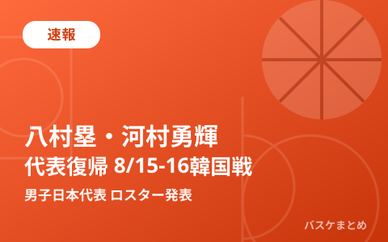
速報
八村塁がパリ五輪以来の代表復帰、河村勇輝も合流 男子日本代表 8/15･16韓国戦ロスター発表
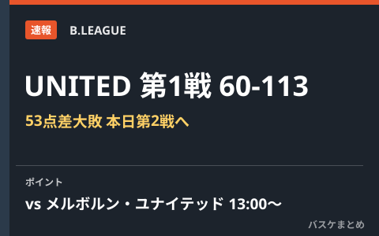
速報
B.LEAGUE UNITED 第1戦60-113大敗 本日メルボルン・ユナイテッドと第2戦
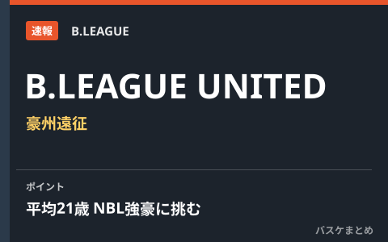
速報
B.LEAGUE UNITED 豪州遠征 平均21歳の若手精鋭がNBL強豪に挑む
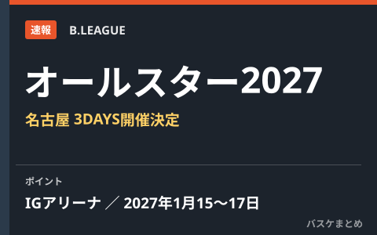
速報
Bリーグオールスター2027 名古屋IGアリーナで1月15〜17日3DAYS開催、中学生バスケ大会も同会場へ
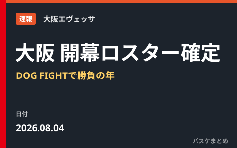
速報
大阪エヴェッサ 2026-27開幕ロスター確定 「DOG FIGHT」で結果を求める年に
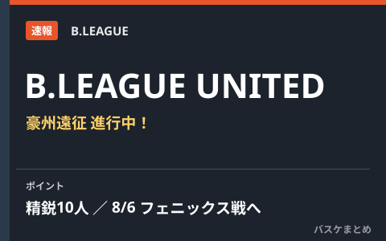
速報
B.LEAGUE UNITEDが豪州遠征中！精鋭10人が8月6日フェニックス戦へ〜2030年NBAへの挑戦
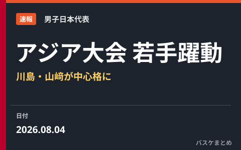
速報
アジア大会2026へ 若手躍動の男子日本代表 川島悠翔・山﨑一渉が中心格に
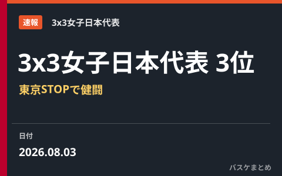
速報
3x3女子日本代表が東京STOPで3位入賞 ウィメンズシリーズ2026
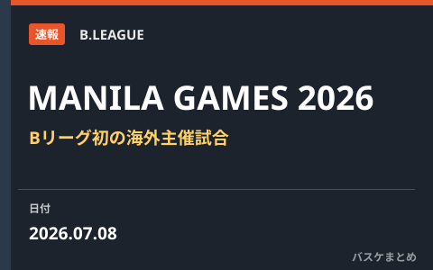
速報
B.LEAGUE初の海外主催試合「MANILA GAMES 2026」9月マニラで開催
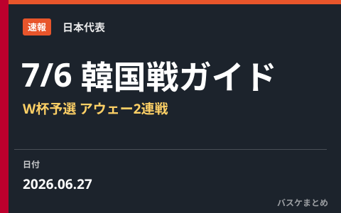
速報
7月6日 日本代表vs韓国戦 視聴ガイド W杯予選Window3アウェー2連戦の見方
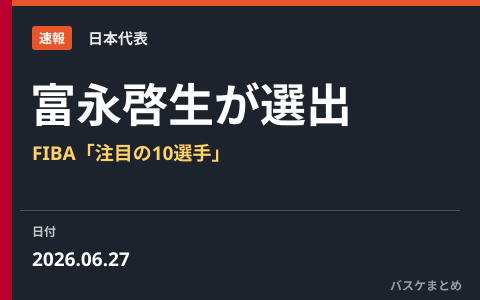
速報
FIBAがW杯アジア予選「注目の10選手」を発表 日本代表から富永啓生が選出
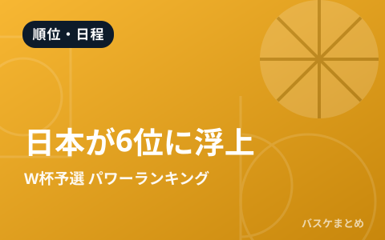
速報
FIBA・W杯アジア予選パワーランキング更新 日本は1つ上げて6位、7月のWindow3で中国に“借りを返せるか”
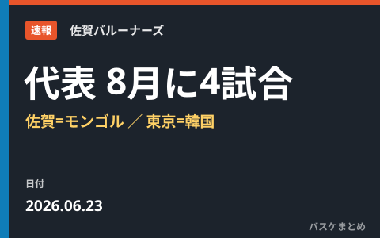
速報
男子日本代表、8月に国際試合4試合を開催へ 佐賀でモンゴル・東京で韓国と対戦
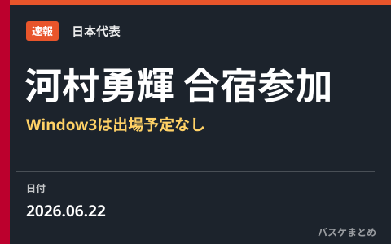
速報
河村勇輝が日本代表・第2次強化合宿に参加 7月のW杯予選Window3は出場予定なし

速報
男子日本代表、W杯予選Window3へ第2次強化合宿の23名を発表 7月に中国・韓国とアウェー2連戦
このカテゴリは1日3回を目安に最新ニュージスを追加しています。